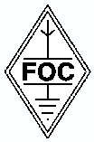

FOC:
First Class Operators Club
(Klubben för operatörer av första klass)
Vad är FOC?
FOC är en telegrafiklubb som är baserad i Storbrittanien
och som grundades 1938.
Klubben har begränsat sitt medlemsskap till 500 medlemmar i världen.
Klubben strävar efter hög kvalitet under radioaktiviteterna,
kombinerat med att leva ett socialt liv,
både i luften och tillsammans med familjen och medlemmar vid olika
evenemang i världen.